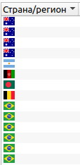

Столкнулся с тем, что моя впска в РФ подвергается SYN-флуд атакам по 443 порту с последней недели 2024 года. Подсети атакующих оперативно добавляю в правила iptables. Так то понятно, что просто whitelist фаервол с моей провайдерской подсетью и всё, но боюсь что могу потерять доступ когда-нибудь и придётся через панельку хостинга залезать. Да ещё и личный интерес представляют ip ддосеров. Атаки идут с ip в подсетях /24 или /22.
Прилагаю свой банлист:
91.234.16.0/24
82.118.129.0/24
95.171.233.0/24
194.226.45.0/24
170.231.29.0/24
170.231.30.0/24
170.231.28.0/24
170.231.31.0/24
170.245.237.0/24
170.245.238.0/24
170.245.239.0/24
148.113.163.0/24
185.170.204.0/22
45.174.16.0/22
45.190.252.0/22
45.164.202.0/23
45.173.88.0/22
170.246.212.0/22
213.87.75.0/24
213.87.46.0/24
212.188.1.0/24
212.188.16.0/24
189.127.184.0/22
Посмотрел вывод whois по этим адресам. Не зря:
inetnum: 91.234.16.0 - 91.234.16.255
netname: LICARD-NET
inetnum: 82.118.128.0 - 82.118.129.255
netname: LUKOIL-INFORM-PERM
inetnum: 185.170.204.0 - 185.170.204.255
netname: DATA-CENTRE-DATALINE
inetnum: 170.231.28.0/22
owner: GPP SOLUCOES EM INFORMATICA
country: BR
inetnum: 213.87.72.0 - 213.87.75.15
netname: MTSNET-URAL
И так далее. Одинаковые SYN-флуд атаки с RU и BR ip-адресов. Для меня показалось очевидным, что атаки проводятся Всевышним РКНом в рамках борьбы с прокси нового поколения. Под вопросом только смысл этих атак, когда в нашем современном мире существуют SYN-cookies. Написал сюда, чтобы поинтересоваться, есть ли другие люди, сервера которых долбят структуры?
стоило бы указать какие именно ip адреса. у меня тоже ру впс, сильно не смотрел, но видел этот 45.190.252.180 и еще соседние с ним, на сервере открыт только 443 порт, из россии трафика 0 байт, т.е. впс русская но подключений из рф никогда не делал
Сейчас с этого диапазона атаки не летят, но взял список из записи tcpdump, которую сделал только что, если кому-то понадобится
адреса
213.87.46.235
189.127.184.246
212.188.1.46
212.188.1.162
189.127.184.113
212.188.1.43
213.87.46.91
212.188.1.191
213.87.75.167
189.127.186.181
213.87.75.11
212.188.1.165
213.87.75.100
212.188.16.64
189.127.186.211
212.188.1.185
213.87.46.131
213.87.75.251
213.87.46.92
212.188.16.200
212.188.16.107
212.188.1.45
212.188.1.67
212.188.16.110
212.188.16.17
189.127.184.236
212.188.1.178
189.127.185.233
189.127.185.27
212.188.16.252
212.188.16.145
213.87.75.34
212.188.16.24
189.127.185.148
212.188.16.92
189.127.184.68
213.87.75.192
213.87.75.138
213.87.75.183
213.87.46.102
213.87.75.224
212.188.1.60
189.127.185.67
213.87.75.136
189.127.186.200
212.188.1.205
213.87.46.188
189.127.185.126
213.87.75.150
212.188.1.92
213.87.46.70
212.188.1.99
213.87.75.105
213.87.75.59
213.87.46.220
213.87.75.171
189.127.184.254
212.188.1.2
189.127.185.90
212.188.1.184
189.127.186.182
212.188.1.208
213.87.46.114
213.87.46.242
213.87.75.141
189.127.184.244
212.188.16.163
212.188.16.250
189.127.184.2
212.188.1.173
212.188.1.73
212.188.16.133
212.188.16.20
213.87.46.194
212.188.16.65
189.127.184.70
189.127.185.144
213.87.46.62
189.127.184.237
212.188.16.211
212.188.1.213
189.127.186.65
213.87.75.33
189.127.184.168
213.87.75.108
212.188.16.164
213.87.75.16
189.127.185.123
189.127.186.225
212.188.1.148
212.188.1.249
212.188.1.220
212.188.1.93
212.188.16.78
212.188.1.6
213.87.46.210
213.87.75.42
213.87.75.21
212.188.16.53
213.87.75.210
213.87.46.148
213.87.75.182
213.87.46.207
212.188.1.156
189.127.184.160
189.127.185.194
189.127.186.26
212.188.16.31
212.188.1.248
212.188.1.69
213.87.46.168
213.87.46.104
212.188.16.94
213.87.75.169
212.188.1.27
212.188.1.59
213.87.46.83
213.87.75.20
189.127.184.180
212.188.1.187
212.188.1.251
189.127.185.252
189.127.186.83
212.188.16.178
212.188.16.135
213.87.46.149
189.127.184.27
189.127.186.62
212.188.1.138
А сколько ГиБ SYN трафика набегает или какой packets per second или загрузка CPU во сколько раз выросла?
про свои ip могу сказать что было около 4pps
а не, только что начались запросы 20pps
ips
212.188.1.210
213.87.75.128
212.188.16.252
212.188.1.66
212.188.16.60
212.188.16.56
212.188.1.205
212.188.16.200
212.188.16.160
212.188.1.248
212.188.1.145
213.87.46.211
213.87.75.81
212.188.16.13
212.188.16.4
213.87.75.132
212.188.16.151
212.188.1.126
212.188.16.225
213.87.75.14
213.87.75.215
213.87.46.218
212.188.16.152
213.87.46.243
213.87.75.23
213.87.46.246
212.188.1.236
213.87.75.87
213.87.75.84
213.87.75.5
213.87.46.72
212.188.1.244
213.87.46.110
212.188.16.176
213.87.75.205
213.87.46.115
213.87.75.211
212.188.1.150
213.87.75.159
212.188.16.130
213.87.75.254
212.188.1.8
213.87.46.245
213.87.75.112
213.87.46.55
212.188.16.83
213.87.75.175
212.188.16.105
212.188.1.178
213.87.46.66
212.188.16.196
212.188.16.55
213.87.75.180
213.87.46.206
213.87.46.183
213.87.75.157
212.188.16.116
212.188.16.221
212.188.16.76
213.87.46.69
212.188.16.34
212.188.1.96
212.188.1.27
213.87.75.97
213.87.75.68
212.188.16.70
213.87.75.93
212.188.1.107
кому интересно то можете смотреть командой tcpdump -n -f "port 443 and inbound and tcp[tcpflags] & (tcp-syn) != 0"
На ГиБ не смотрю, как и на CPU load. Сейчас замер сделал, 13 pps средний, в пике 28
Очень странно, решил проверить у себя. Много запросов на 443 порт, правда из Бразилии
Аналогично, тоже уйма запросов из Бразилии такого вида:
{kind=link}
только что проверил у себя. Точно так же из Бразилии летят
{kind=link}
Наверное ркн снова active probing тестирует
Удивительно, но у меня тоже самое
Да нет, насколько я знаю active probing это про другое. Тут просто флуд SYN пакетами, а если бы и был active probing, то смысла 0, так как это обычный https для них
Взял IP-адреса, которые сейчас атакуют. Есть совпадение с постами выше. Можно сделать вывод, что у атакующих единовременно доступ к общему оборудованию, которым единовременно атакуют нас. Остаётся 2 вопроса: в чем смысл атаки и как определяют цели
новый список
170.81.237.246
170.81.238.146
170.81.239.136
212.188.42.152
212.188.42.217
212.188.42.45
212.188.42.239
170.81.238.50
212.188.42.99
170.81.238.74
212.188.42.210
170.81.238.147
212.188.42.60
170.81.236.234
170.81.239.19
212.188.42.82
170.81.236.254
212.188.42.78
212.188.42.242
212.188.42.193
170.81.239.18
170.81.236.18
170.81.238.32
170.81.239.94
170.81.239.59
212.188.42.209
170.81.238.236
212.188.42.199
170.81.237.162
212.188.42.226
170.81.237.233
212.188.42.53
170.81.238.191
212.188.42.148
212.188.42.61
170.81.237.250
170.81.237.187
212.188.42.71
170.81.236.74
170.81.238.202
212.188.42.95
170.81.236.224
212.188.42.252
212.188.42.111
170.81.239.228
170.81.237.35
212.188.42.62
212.188.42.52
170.81.236.33
170.81.239.234
212.188.42.157
170.81.238.8
212.188.42.13
170.81.239.212
170.81.239.97
212.188.42.97
170.81.236.212
170.81.239.125
212.188.42.116
170.81.236.131
212.188.42.136
212.188.42.228
170.81.239.144
212.188.42.84
212.188.42.204
212.188.42.24
212.188.42.174
212.188.42.208
212.188.42.182
212.188.42.153
212.188.42.167
170.81.239.252
170.81.239.15
170.81.238.198
212.188.42.144
170.81.239.69
170.81.237.196
212.188.42.120
212.188.42.81
170.81.237.178
170.81.239.98
212.188.42.240
212.188.42.177
170.81.238.112
212.188.42.66
170.81.239.132
170.81.236.170
212.188.42.192
212.188.42.17
212.188.42.51
212.188.42.221
212.188.42.220
170.81.238.140
212.188.42.117
170.81.238.231
212.188.42.101
170.81.237.104
212.188.42.200
170.81.236.109
212.188.42.155
170.81.237.128
170.81.237.169
170.81.238.47
170.81.239.121
170.81.239.58
212.188.42.12
170.81.239.157
212.188.42.235
212.188.42.25
170.81.237.181
212.188.42.175
170.81.236.149
Вы используете nekoray/nekobox?
Нет, 3x-ui панель на сервере (порт панели закрыт, все операции через ssh туннель), v2rayn клиент на PC и Streisand на iOS
У меня тоже какое-то время была панель 3x-ui и x-ui, но не зашло и поменял на голый сингбокс. Возможно корень в 3x-ui ? @aboba33 , @xX_RUP3R7_P4UL50N_Xx - Вы когда-нибудь использовали с этого vps 3x-ui?
3x-ui использую, но она слушает только 127.0.0.1 и находится на кастомном порту, сомневаюсь что в ней дело (к тому же максимально её задушил по правам). SSH находится высоко, вход только ключом и под своим именем (root запрещён).
Из прочего - steal oneself на поддомене с duckdns.org через vless-reality, маршрутизация RU трафика в WARP в панели и блок всех сомнительных айпишников через iptables, основанный на этом репозитории - GitHub - C24Be/AS_Network_List: Blacklists generator of subnets of Russian government agencies for blocking them on one's servers.
Но сама 3x-ui то может знать о ip впски, да и к тому же, тыж её когда устанавливаешь изначально, она со стандартными настройками. Скорее всего дело действительно в этих панелях. Но для более точных выводов нужен сервер который не засорен панелями никак, так сможем оперделить точно
1 пост прочитай… У меня там только nginx
И никогда не было 3x-ui? У вас тоже с бразильских айпишек?
Что на клиенте?
Интересно… Помимо бразильцев, пошла куча запросов с айпишников MTS из разных регионов. Связанно ли это как-то с их сегодняшними траблами?
P.s. получил их командой sudo timeout 15s tcpdump -nq -f "port 443 and inbound and tcp[tcpflags] & (tcp-syn) != 0" | awk '{print $3}' | cut -d'.' -f1-4 | sort | uniq
{kind=link}
Список
142.250.185.206
142.250.186.142
142.250.186.42
142.250.186.65
170.81.236.137
170.81.236.156
170.81.236.167
170.81.236.195
170.81.236.253
170.81.237.187
170.81.237.24
170.81.237.37
170.81.237.87
170.81.238.112
170.81.238.179
170.81.239.183
170.81.239.188
170.81.239.198
170.81.239.53
212.188.16.123
212.188.16.132
212.188.16.161
212.188.16.183
212.188.16.19
212.188.16.199
212.188.16.201
212.188.16.205
212.188.16.213
212.188.16.225
212.188.16.240
212.188.16.63
212.188.16.70
212.188.16.91
212.188.42.131
212.188.42.154
212.188.42.216
212.188.42.233
212.188.42.243
213.87.46.109
213.87.46.194
213.87.46.215
213.87.46.220
213.87.46.82
213.87.75.111
213.87.75.139
213.87.75.14
213.87.75.155
213.87.75.198
213.87.75.244
213.87.75.249
213.87.75.31
213.87.75.64
213.87.75.87
216.58.206.42
80.77.172.12
80.77.172.15
80.77.172.16
Ещё интересней
Информация не новая))
Но вы уже не 1)
Минимальные правки для улучшения работы сервера в данной ситуации:
sudo nano /etc/sysctl.conf
# BBR для улучшения пропускной способности
net.ipv4.tcp_congestion_control = bbr
net.core.default_qdisc = fq
# Противодейсивме SYN-атакам
net.ipv4.tcp_syncookies = 1
# Противодейсивме Smurf-атакам
net.ipv4.icmp_echo_ignore_broadcasts = 1
Upd. убрал лишние (не работающие) рекомендации
Upd.2 убрал дублирующиеся / лишние параметры, т.к. зачастую по умолчанию в системе уже стоят оптимальные
Зарегался чтобы отписать
Решил проверить, и тоже много бразильских ip-шников
Как пример:
170.81.236.115
170.81.236.138
170.81.236.45
170.81.237.0
170.81.237.227
170.81.237.5
170.81.238.114
170.81.238.122
170.81.238.209
170.81.238.47
170.81.239.42
170.81.239.70
170.81.239.85
170.81.236.140
170.81.236.178
170.81.236.22
170.81.237.0
170.81.237.133
170.81.237.214
170.81.237.47
170.81.238.207
170.81.238.222
170.81.238.32
Отравил их сразу по подсетям в бан, интересно что не на всех vps такое, только на некоторых, где-то вообще пусто
Панели никакие не использую, голый xray-core с Vless+Reality с маскировкой под свой домен и на некоторых VLESS +XTLS -Vision тоже с маскировкой под свой домен
Подтверждаю, у меня абсолютно тоже самое. Спасибо всем за советы, сделал конфиг, забанил айпишники, даже Ютуб быстрее стал грузить вроде
Вы делаете хуже/так же как и по дефолту. (Да и некоторые параметры ниже тоже хуже дефолтных и даже не относятся к отражению флуда, например про буферы, fastopen, mtu probing, slow start). То что происходит в теме на атаку вообще не походит, просто флуд, неизвестно только зачем он
тоже самое
{kind=link}
Ребята, а как подсеть забанить, ввожу
sudo ufw insert 1 deny from 170.81.0.0/16
sudo ufw reload
все равно прет от них трафик.
У меня xray в docker, что еще ввести?
У вас через VPS данные с торрент-клиента не пересылаются ли на анонсеры или DHT (не путать с “соединение с пиром”)?
Есть раздача, на которой много бразильцев присутствует. Отдача им не идет, но в обмене данными присутствуют постоянно.

ps: в результатах tcpdump -n -f "port 443 and inbound and tcp[tcpflags] & (tcp-syn) != 0" был в том числе мой ip провайдера.
Если правильно понял вопрос, то я вообще не использую торрент с впном
Потому что эта команда выводит информацию о всех входящих TCP пакетах на порт 443 с флагом SYN, среди которых могут быть и ваши соединения
Про эти параметры писал, в разных торрент-клиентах может быть по разному.
{kind=link}
Пару ip глазами “поймал” из списка tcpdump и в торрент-клиенте.
Понял, благодарю за замечания (сам в этой сфере можно сказать новичок-самоучка, многого не понимаю как следует, а ChatGPT больно часто ошибается), поправил коммент и оставил только оптимально-минимальные параметры.
Насколько я понимаю это нормально. При добавлении адреса в блэклист трафик от него всё-рано продолжает поступать, но дальше файервола он никуда идёт (сужу в том числе и по своим настройкам в iptables, в котором видно сколько трафика было заблокировано с определённых адресов).
Точно не скажу, но неделю-две назад качал через торрент в качестве эксперимента парочку раздач, как раз со включенным DHT, поиском локальных пиров и т.д. (хостер VPS такой трафик разрешает, а мой ОпСоС в свою очередь блокирует торренты в любом виде). Вот только не помню, чтобы на тех раздачах присутствовали бразильцы.
BTW, мне кажется что в причинах данного флуда РКН всё-же не при чём, слишком странно для них это выглядит.
Подтверждаю, у меня на сервере тоже самое происходит, сначало шло с 177.0.0.0/8 и 170.81.0.0/16 , боролся просто заблокировав эти подсети через iptables:
iptables -t raw -A PREROUTING -s 170.81.0.0/16 -j DROP
iptables -t raw -A PREROUTING -s 177.0.0.0/8 -j DROP
Но теперь они вообще с абсолютно разных подсетей дудосят, что с этим делать не знаю, мне к сожалению не хватает знаний.
{kind=link}
UPD:
Чуть более конкретные подсети:
177.128.0.0/16
177.72.0.0/16
tcpdump
177.128.120.115
177.128.120.228
177.128.120.37
177.128.121.242
177.128.121.58
177.128.121.75
177.128.122.117
177.128.122.143
177.128.122.196
177.128.122.208
177.128.122.39
177.128.123.152
177.128.123.155
177.128.123.238
177.128.123.6
177.128.123.65
177.128.123.99
177.72.152.122
177.72.152.140
177.72.152.158
177.72.152.17
177.72.152.178
177.72.152.98
177.72.153.100
177.72.153.156
177.72.153.185
177.72.153.253
177.72.153.66
177.72.154.113
177.72.154.138
177.72.154.180
177.72.154.187
177.72.154.49
177.72.154.73
177.72.155.0
177.72.155.113
177.72.155.28
177.72.155.60
Как вариант - установить GeoIP модуль и блокировать все подключения из Бразилии / всех стран, кроме России + США + Европы + *страны расположения самого сервера*
У меня в управлении четыре сервера у хостера H2NEXUS.
На три из них идёт такая «спам» атака с подсетей 177.0.0.0 и ряда других которые тут указывали.
И самое важное - на них как раз есть 3X-UI.
На которого нет атаки - не установлен 3X-UI.
Чем грозит в теории такие сканы кроме нагрузки на процессор/скорость сервера?
Если такими атаками можно найти сервера для взлома и дальнейшей эксплуатации, то видимо кто-то решил просканировать интернет для расширения своей базы «ботнетов».
Порт панели доступен на внешке?
У меня закрыт, хожу на нее по ssh, но все равно ддосят.
Если есть возможность, то заблокируйте весь icmp трафик у себя на сервере, по типу
в raw_prerouting
iifname “eth0.2” ip protocol icmp drop
и в raw_output
oifname “eth0.2” ip protocol icmp drop
а так же на вход, выход и переадресацию
это вас избавит от многих проблем, но если нет такой возможности, то значит вам не повезло )
Конечно если захотят, то начнут использовать и другие пути, но это ведь надо захотеть, а с другой стороны зачем, если и так полно всего, то вероятность что отвяжутся, ну или оставят на закуску, так, чисто для тренировки )
Закрыт везде, тоже только по ssh.
Так странно…
Добавил правила:
sudo iptables -t raw -A PREROUTING -i ens3 -p icmp -j DROP
sudo iptables -t raw -A OUTPUT -o ens3 -p icmp -j DROP
sudo iptables -A INPUT -p icmp -j DROP
sudo iptables -A OUTPUT -p icmp -j DROP
sudo iptables -A FORWARD -p icmp -j DROP
Но сервер все равно пингуется (сервер от Aeza), решил переустановить все, запустил переустановку и во время переустановки пинги не прекращались… что за система такая.
Тоже бразильские мучачосы решили постучаться на открытый 443 порт
3 8968 466K DROP 0 -- * * 177.72.0.0/16 0.0.0.0/0
4 8794 457K DROP 0 -- * * 177.128.0.0/16 0.0.0.0/0
5 277 14404 DROP 0 -- * * 45.190.148.0/24 0.0.0.0/0
6 252 13104 DROP 0 -- * * 45.190.151.0/24 0.0.0.0/0
7 207 10764 DROP 0 -- * * 45.190.150.0/24 0.0.0.0/0
8 0 0 DROP 0 -- * * 45.190.148.0/24 0.0.0.0/0
9 186 9672 DROP 0 -- * * 45.190.149.0/24 0.0.0.0/0
Началось это оказывается еще в октябре, но как-то не обращал внимания на это
{kind=link}
на аезе входящие icmp до сервера не доходят, ответы посылает их anti-ddos, т.е. отключить невозможно, да и не нужно по моему мнению (a полная блокировка icmp это вредно, особенно на аезе с их заниженным mtu)
По IPv6 у меня до клиентов VPN доходят ICMPv6.
значит на ipv6 нету anti-ddos (называю так т.к. хз что у них там за туннель стоит), такое и у другого провайдера видел. по ipv4 все их ip отвечают на icmp, даже где впс выключены
Как вы получили данный график TCP?
grafana их строит, telegraf собирает, influxdb хранит.
В sudo nano /etc/sysctl.conf добавил эти строки:
net.ipv4.icmp_echo_ignore_all=1
net.ipv4.tcp_syncookies=1
net.ipv4.icmp_echo_ignore_broadcasts=1
После чего два раза за два дня собирал дамп командой:
tcpdump -n -f "port 443 and inbound and tcp[tcpflags] & (tcp-syn) != 0" -w /tmp/tcpdump_output.log && echo "Процесс завершен, лог готов: /tmp/tcpdump_output.log"
И после смотрел результаты командами:
sudo chown root:root /tmp/tcpdump_output.log
sudo tcpdump -n -r /tmp/tcpdump_output.log | awk '{split($3, ip, "."); subnet=ip[1]"."ip[2]; count[subnet]++; if (!first_time[subnet]) first_time[subnet]=$1; last_time[subnet]=$1} END {for (s in count) print count[s], s, substr(first_time[s],1,8), substr(last_time[s],1,8)}' | sort -k1,1nr
SYN атаки продолжаются, как с ними бороться не знаю. Влияние на сервер вроде бы не оказывают.
Тоже самое:
187.33.128.179
187.33.128.199
187.33.128.66
187.33.129.160
187.33.129.198
187.33.129.240
187.33.129.38
187.33.129.40
187.33.130.47
187.33.130.52
187.33.131.205
187.33.131.62
Подскажите, плз, как эту подсеть заблокировать? У меня в докере 3x-ui
я так понимаю iptables -t raw -A PREROUTING -s 187.33.0.0/8 -j DROP
Неверно, за место /8, нужно использовать /16.
Если использовать /8, то это будет охватывать диапазон от 187.0.0.0 до 187.255.255.255, если же /16, то это охватит диапазон от 187.33.0.0 до 187.33.255.255.
Можно не блокировать а забить, вреда нет (и даже с флудом в 100 pps не будет). С блокировкой /8 подсети случайно себя или нужные сайты можете заблокировать
Тоже верно, мне например лично помог совет с включением параметра:
net.ipv4.tcp_syncookies = 1
До этого сервер заметно лагал, особенно при подключении через ssh.
Как минимум на ubuntu/debian этот параметр уже такой по дефолту. И срабатывает он только если в dmesg появляются сообщения “sending cookies”, если сообщений нет то значит он не срабатывает, а если сообщения появляются то не факт что это из-за внешнего флуда, если качать торренты через vless то они могут начать появляться
Дыа? Ну я себя ещё не заблокировал, так что ничего страшного)
Спасибо, сработало
Судя по количеству пакетов, это обычный флуд, а не ддос.
Если у вас на столько слабый впс, что не справляется с таким количеством пакетов, то можно в iptables настроить защиту от syn flood, а не добавлять целые сети.
iptables -N syn_flood
iptables -A INPUT -p tcp --syn -j syn_flood
iptables -A syn_flood -m limit --limit 1/s --limit-burst 3 -j RETURN
iptables -A syn_flood -j DROP
себя сколько раз заблокировали?
У меня белый список. Это пример из интернета. Понятное дело, что лимиты нужно подбирать.
Пробовал это делать ранее, но vless сразу отваливался (вполне допускаю, что что-то сделал не так)
Вот ещё бразильские братушки:
45.166.196.244
45.166.196.95
45.166.197.159
45.166.197.220
45.166.197.35
45.166.197.44
45.166.197.7
45.166.198.132
45.166.198.6
45.166.199.172
45.166.199.193
45.166.199.246
45.166.199.247
45.166.199.73
И все-таки совсем не блочится. У меня Debian с 3x-ui в Docker. Подскажите, плз, таблицы raw там, я так понимаю нет, и находил инфу, что используется nftables вместо iptables. Есть знатоки? =)
Так ведь правила iptables работают на всю систему, в том числе и на Docker, разве нет? По крайней мере у меня тоже Debian 12 с 3X-UI (правда без докера, не вижу особого смысла в его применении в моём случае) и правила iptables отрабатывают как надо. Да, в выводе всё равно будут видны запросы от заблоченных айпишников, но дальше iptables они не идут, соответственно лишний раз не нагружают ресурсы сервера (хоть и нагрузка там мизерная).
root@localhost:~# iptables -t raw -A PREROUTING -s 181.191.0.0/16 -j DROP
root@localhost:~# iptables -t raw -L
Chain PREROUTING (policy ACCEPT)
target prot opt source destination
DROP all -- 181-191-0-0.uplinkx.com.br/16 anywhere
root@localhost:~# sudo timeout 15s tcpdump -nq -f "port 443 and inbound and tcp[tcpflags] & (tcp-syn) != 0" | awk '{print $3}' | cut -d'.' -f1-4 | sort | uniq
tcpdump: verbose output suppressed, use -v[v]... for full protocol decode
listening on ens1, link-type EN10MB (Ethernet), snapshot length 262144 bytes
20 packets captured
25 packets received by filter
0 packets dropped by kernel
181.191.40.10
181.191.40.138
181.191.40.158
181.191.41.70
181.191.43.166
181.191.43.238
181.191.43.76
Выглядит так, что не блочится, и жрет ресурсы CPU
Хм, а какой вывод даст эта комманда?
iptables -t raw -L -n -v
root@localhost:~# iptables -t raw -L -n -v
Chain PREROUTING (policy ACCEPT 0 packets, 0 bytes)
pkts bytes target prot opt in out source destination
2761 144K DROP 0 -- * * 181.191.0.0/16 0.0.0.0/0
Chain OUTPUT (policy ACCEPT 0 packets, 0 bytes)
pkts bytes target prot opt in out source destination
Я далеко не эксперт в таких делах, но вроде бы правило работает как надо:
2761 144K DROP 0 -- * * 181.191.0.0/16 0.0.0.0/0
Расшифровка - ВХОДЯЩИЙ АДРЕС 181.191.0.0/16; ОТКЛОНЕНО: 2761 пакет, общим размером 144 килобайт
А следующее:
Chain PREROUTING (policy ACCEPT 0 packets, 0 bytes)
Говорит о том, что никакой трафик из этой цепочки не прошёл дальше iptables.
Используйте input в таблице фильтров
iptables -A INPUT -s 181.191.0.0/16 -j DROP
Разве таблица FILTER не идёт после RAW? Просто кмк в случае RAW трафик будет блокироваться ещё раньше, тем самым минимально соприкасаясь с адресами в статусе DROP
Пробуй:
iptables -D INPUT -p tcp --syn -j syn_flood 2>/dev/null
iptables -F syn_flood 2>/dev/null
iptables -X syn_flood 2>/dev/null
iptables -N syn_flood
iptables -A INPUT -m state --state ESTABLISHED,RELATED -j ACCEPT
iptables -A INPUT -p tcp --syn -j syn_flood
iptables -A syn_flood -m limit --limit 100/s --limit-burst 170 -j RETURN
iptables -A syn_flood -j DROP
Сделал максимум запросов 100 за 170 прыжков, и нагрузка на сервер заметно снизилась. Поправьте, если где-то накосячил
вы уверены что ваше правило вообще срабатывает? я не вижу в нём никакого смысла и только потенциальный вред. iptables -vnL
Вообще, да. Но похоже что у него действительно адреса блокируются. Просто в tcpdump поступают пакеты с интерфейса, а не с iptables, поэтому он их видит.
Если так, то печаль. Нагрузка на CPU не снизилась  Но спасибо за разъяснения
Но спасибо за разъяснения 
какая у вас нагрузка от флуда 10 пакетов/сек? у меня почти нулевая
100% на CPU. Одно ядро с 2.0 MHz
что в top? в iptables сколько правил?
iptables -S
iptables -S -t nat
iptables -S -t raw
iptables -S -t mangle
может их там у вас слишком много, поэтому даже малейший флуд долбит цп в 100%
У него там докер, который создает простыню из цепочек iptables. А в докере 3x-ui 
я не про докер, тут на форуме кто-то выкладывал скрипт который банит все ip из AS, с ним можно получить несколько тысяч правил с которыми нагрузка на цп очень сильно возрастает, может у него что-то подобное
симулировал syn flood на ноут 2008г (sysbench cpu run выдаёт 350 events per second).
на атакующем компе hping3 -i u100 -S -p 80 192.168.1.1 выдаёт около 5000 пакетов/сек, нагрузка на ЦП ноута не превышает 15%.
hping3 -i u10 -S -p 80 192.168.1.1 выдаёт 10000 пакетов/сек, нагрузка на цп ноута ровно 50%.
5000 пакетов/сек это далеко от рекордных 120 пакетов/сек которые тут выкладывали DDOS атака на VPS с VLESS+REALITY - #44 by 0x99
на самой днищенской впс которая у меня есть sysbench cpu run выдаёт 600 events per second
Краткосрочные пики до 100%, потом падение до 0%
1157 root 20 0 1257540 57696 22656 S 27.0 6.3 143:31.92 xray-li+
root@localhost:~# iptables -S
iptables -S -t nat
iptables -S -t raw
iptables -S -t mangle
-P INPUT ACCEPT
-P FORWARD DROP
-P OUTPUT ACCEPT
-N DOCKER
-N DOCKER-ISOLATION-STAGE-1
-N DOCKER-ISOLATION-STAGE-2
-N DOCKER-USER
-A INPUT -i lo -j ACCEPT
-A FORWARD -j DOCKER-USER
-A FORWARD -j DOCKER-ISOLATION-STAGE-1
-A FORWARD -o docker0 -m conntrack --ctstate RELATED,ESTABLISHED -j ACCEPT
-A FORWARD -o docker0 -j DOCKER
-A FORWARD -i docker0 ! -o docker0 -j ACCEPT
-A FORWARD -i docker0 -o docker0 -j ACCEPT
-A DOCKER-ISOLATION-STAGE-1 -i docker0 ! -o docker0 -j DOCKER-ISOLATION-STAGE-2
-A DOCKER-ISOLATION-STAGE-1 -j RETURN
-A DOCKER-ISOLATION-STAGE-2 -o docker0 -j DROP
-A DOCKER-ISOLATION-STAGE-2 -j RETURN
-A DOCKER-USER -j RETURN
-P PREROUTING ACCEPT
-P INPUT ACCEPT
-P OUTPUT ACCEPT
-P POSTROUTING ACCEPT
-N DOCKER
-A PREROUTING -m addrtype --dst-type LOCAL -j DOCKER
-A OUTPUT ! -d 127.0.0.0/8 -m addrtype --dst-type LOCAL -j DOCKER
-A POSTROUTING -s 172.17.0.0/16 ! -o docker0 -j MASQUERADE
-A DOCKER -i docker0 -j RETURN
-P PREROUTING ACCEPT
-P OUTPUT ACCEPT
-A PREROUTING -s 181.191.0.0/16 -j DROP
-A PREROUTING -s 177.93.0.0/16 -j DROP
-P PREROUTING ACCEPT
-P INPUT ACCEPT
-P FORWARD ACCEPT
-P OUTPUT ACCEPT
-P POSTROUTING ACCEPT
root@localhost:~# iptables -L
Chain INPUT (policy ACCEPT)
target prot opt source destination
ACCEPT all -- anywhere anywhere
Chain FORWARD (policy DROP)
target prot opt source destination
DOCKER-USER all -- anywhere anywhere
DOCKER-ISOLATION-STAGE-1 all -- anywhere anywhere
ACCEPT all -- anywhere anywhere ctstate RELATED,ESTABLISHED
DOCKER all -- anywhere anywhere
ACCEPT all -- anywhere anywhere
ACCEPT all -- anywhere anywhere
Chain OUTPUT (policy ACCEPT)
target prot opt source destination
Chain DOCKER (1 references)
target prot opt source destination
Chain DOCKER-ISOLATION-STAGE-1 (1 references)
target prot opt source destination
DOCKER-ISOLATION-STAGE-2 all -- anywhere anywhere
RETURN all -- anywhere anywhere
Chain DOCKER-ISOLATION-STAGE-2 (1 references)
target prot opt source destination
DROP all -- anywhere anywhere
RETURN all -- anywhere anywhere
Chain DOCKER-USER (1 references)
target prot opt source destination
RETURN all -- anywhere anywhere
root@localhost:~# iptables -t raw -L -n -v
Chain PREROUTING (policy ACCEPT 0 packets, 0 bytes)
pkts bytes target prot opt in out source destination
2779 145K DROP 0 -- * * 181.191.0.0/16 0.0.0.0/0
10519 547K DROP 0 -- * * 177.93.0.0/16 0.0.0.0/0
Видно же что команды не сработали. Буду полагать что вы сами ничего крупного туда не добавляли.
Пики до 100% от чего? от процессов или ядра? Если остановить докер?
Да, проверял на своём сервере, который тоже попал под флуд-атаку (в подарок со своими активными клиентами, которые хотят посмотреть ютуб). Писал-крутил настройки 1.5 часа, применил, никто не пожаловался… От 4600+ TCP запросов до 1600 максимум…
В любом случае надо поискать более рациональное решение, чтобы не загрязнять iptables…
Обычно у хостера есть графики нагрузки на CPU и загрузки канала связи. Покажите их за последние сутки.
И покажите вывод top -o %CPU в пиках
непонятно кому ответ и про что, мне вы так и не ответили и не показали сколько у вас срабатываний на этом правиле.
совершенно непонятно о чём речь
Проблема решилась переустановкой Docker и 3X-UI. SYN Flood никуда не делся, но загрузка CPU скакать перестала
Узнал у ребят и Hostkey, CPU не ведут подсчет, канал почти не загружен:
А вот как это выглядело, постоянные скачки загрузки CPU до 100% с оповещением в тг-бот о превышении допустимого предела загрузки:
root@localhost:~# top -o %CPU
top - 21:13:23 up 1 day, 22:10, 1 user, load average: 1.19, 0.70, 0.64
Tasks: 115 total, 1 running, 114 sleeping, 0 stopped, 0 zombie
%Cpu(s): 4.2 us, 5.4 sy, 0.0 ni, 45.4 id, 0.0 wa, 0.0 hi, 7.2 si, 37.9 st
MiB Mem : 892.3 total, 68.2 free, 544.2 used, 414.9 buff/cache
MiB Swap: 0.0 total, 0.0 free, 0.0 used. 348.1 avail Mem
PID USER PR NI VIRT RES SHR S %CPU %MEM TIME+ COMMAND
14 root 20 0 0 0 0 S 16.4 0.0 30:40.15 ksoftirqd/0
1157 root 20 0 1257540 64864 22656 S 16.1 7.1 158:09.34 xray-linux-amd6
20331 root 20 0 0 0 0 I 4.0 0.0 0:01.57 kworker/0:2-events
1114 root 20 0 1284696 71512 32580 S 3.8 7.8 46:40.03 x-ui
19846 root 20 0 17996 11220 9280 S 1.6 1.2 0:05.10 sshd
20084 root 20 0 11684 5172 3040 R 1.6 0.6 0:25.20 top
628 root 20 0 1204988 47200 27256 S 0.4 5.2 4:51.98 containerd
15 root 20 0 0 0 0 I 0.2 0.0 1:56.23 rcu_preempt
28 root 20 0 0 0 0 S 0.2 0.0 0:17.58 kcompactd0
20225 root 20 0 0 0 0 I 0.2 0.0 0:00.53 kworker/u32:2-events_unbound
1 root 20 0 102156 11560 8444 S 0.0 1.3 0:04.60 systemd
2 root 20 0 0 0 0 S 0.0 0.0 0:00.30 kthreadd
3 root 0 -20 0 0 0 I 0.0 0.0 0:00.00 rcu_gp
4 root 0 -20 0 0 0 I 0.0 0.0 0:00.00 rcu_par_gp
5 root 0 -20 0 0 0 I 0.0 0.0 0:00.00 slub_flushwq
6 root 0 -20 0 0 0 I 0.0 0.0 0:00.00 netns
10 root 0 -20 0 0 0 I 0.0 0.0 0:00.00 mm_percpu_wq
11 root 20 0 0 0 0 I 0.0 0.0 0:00.00 rcu_tasks_kthread
12 root 20 0 0 0 0 I 0.0 0.0 0:00.00 rcu_tasks_rude_kthread
13 root 20 0 0 0 0 I 0.0 0.0 0:00.00 rcu_tasks_trace_kthread
16 root rt 0 0 0 0 S 0.0 0.0 0:04.00 migration/0
18 root 20 0 0 0 0 S 0.0 0.0 0:00.00 cpuhp/0
20 root 20 0 0 0 0 S 0.0 0.0 0:00.00 kdevtmpfs
21 root 0 -20 0 0 0 I 0.0 0.0 0:00.00 inet_frag_wq
22 root 20 0 0 0 0 S 0.0 0.0 0:00.00 kauditd
23 root 20 0 0 0 0 S 0.0 0.0 0:00.19 khungtaskd
24 root 20 0 0 0 0 S 0.0 0.0 0:00.00 oom_reaper
27 root 0 -20 0 0 0 I 0.0 0.0 0:00.02 writeback
29 root 25 5 0 0 0 S 0.0 0.0 0:00.00 ksmd
30 root 39 19 0 0 0 S 0.0 0.0 0:29.47 khugepaged
31 root 0 -20 0 0 0 I 0.0 0.0 0:00.00 kintegrityd
32 root 0 -20 0 0 0 I 0.0 0.0 0:00.00 kblockd
33 root 0 -20 0 0 0 I 0.0 0.0 0:00.00 blkcg_punt_bio
34 root 0 -20 0 0 0 I 0.0 0.0 0:00.00 tpm_dev_wq
35 root 0 -20 0 0 0 I 0.0 0.0 0:00.00 edac-poller
36 root 0 -20 0 0 0 I 0.0 0.0 0:00.00 devfreq_wq
37 root 0 -20 0 0 0 I 0.0 0.0 0:23.03 kworker/0:1H-kblockd
38 root 20 0 0 0 0 S 0.0 0.0 0:00.73 kswapd0
44 root 0 -20 0 0 0 I 0.0 0.0 0:00.00 kthrotld
46 root -51 0 0 0 0 S 0.0 0.0 0:00.00 irq/24-aerdrv
47 root -51 0 0 0 0 S 0.0 0.0 0:00.00 irq/25-aerdrv
48 root -51 0 0 0 0 S 0.0 0.0 0:00.00 irq/26-aerdrv
49 root -51 0 0 0 0 S 0.0 0.0 0:00.00 irq/27-aerdrv
50 root -51 0 0 0 0 S 0.0 0.0 0:00.00 irq/28-aerdrv
51 root -51 0 0 0 0 S 0.0 0.0 0:00.00 irq/29-aerdrv
52 root -51 0 0 0 0 S 0.0 0.0 0:00.00 irq/30-aerdrv
53 root -51 0 0 0 0 S 0.0 0.0 0:00.00 irq/31-aerdrv
54 root -51 0 0 0 0 S 0.0 0.0 0:00.00 irq/32-aerdrv
55 root -51 0 0 0 0 S 0.0 0.0 0:00.00 irq/33-aerdrv
56 root -51 0 0 0 0 S 0.0 0.0 0:00.00 irq/34-aerdrv
57 root -51 0 0 0 0 S 0.0 0.0 0:00.00 irq/35-aerdrv
58 root -51 0 0 0 0 S 0.0 0.0 0:00.00 irq/36-aerdrv
59 root -51 0 0 0 0 S 0.0 0.0 0:00.00 irq/37-aerdrv
60 root -51 0 0 0 0 S 0.0 0.0 0:00.00 irq/38-aerdrv
61 root -51 0 0 0 0 S 0.0 0.0 0:00.00 irq/39-aerdrv
От флуда помогла вот эта инструкция:
-
Активация SYN cookies
SYN cookies — это механизм, который позволяет серверу не хранить состояние полуоткрытого соединения, а вместо этого кодирует информацию о соединении в самом пакете SYN/ACK. Когда клиент отвечает ACK, сервер проверяет эту информацию и восстанавливает соединение. Для активации SYN cookies выполните команду:
sysctl -w net.ipv4.tcp_syncookies=1
Чтобы изменения сохранились после перезагрузки системы, добавьте строку в файл /etc/sysctl.conf:
net.ipv4.tcp_syncookies = 1 -
Настройка параметров TCP-стека
Вы также можете настроить параметры TCP-стека для управления поведением сервера при атаках Syn flood. Эти настройки уменьшают время ожидания полуоткрытых соединений и увеличивают размер очереди для обработки новых запросов:
- Уменьшение таймаута для полуоткрытых соединений
sysctl -w net.ipv4.tcp_fin_timeout=30 - Увеличение размера очереди для входящих соединений
sysctl -w net.ipv4.tcp_max_syn_backlog=4096 - Ограничение количества попыток повторной отправки SYN+ACK
sysctl -w net.ipv4.tcp_synack_retries=2
Chat-gpt?
Рабочий чат с бородатыми ойтишнегами )
100% ChatGPT “Вы также можете настроить параметры”, “Эти настройки уменьшают время ожидания полуоткрытых соединений и увеличивают размер очереди для обработки новых запросов:”
Люди так писать не будут)
Видать вам в чате рабочем скинули ответ нейронки)
кажется единственный нормальный совет в теме, первый может быть почти полностью бесполезен, но пусть будет, а tcp_synack_retries=2 может действительно помочь (у меня при тесте выше он таким и был, не из-за syn-flood, а для удобства, поэтому забыл упомянуть)
Вполне, вполне )
Что за софт?
Возможно с “бразильскими ботами” продолжение:
В проекте Fedora из-за запросов ИИ-индексаторов наблюдаются сбои с работой платформы совместной разработки Pagure. В процессе противостояния с ИИ-ботами пришлось заблокировать множество подсетей, включая весь диапазон IP-адресов Бразилии, что привело к блокировке и некоторых пользователей.
Источник
На vps так же перестали бразильские ip отсвечивать.